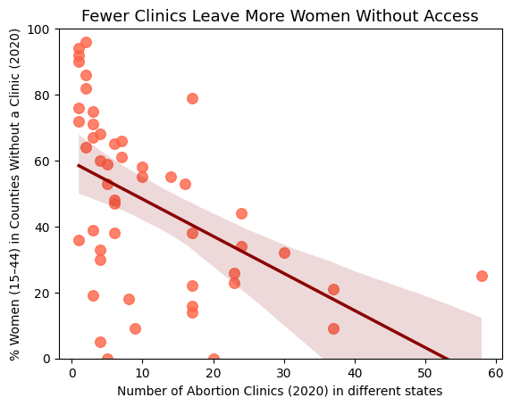

Fewer abortion clinics leave more women without access.
Design Decision 1: Remove outliers to make the trend clearer.
Score: -1
Rationale:
This makes the negative trend between clinic count and access look stronger, helping persuade the audience that
fewer clinics directly lead to limited access. It worked well because it made the pattern visually clear.
Design Decision 2: Use red color to attract audience attention.
Score: -1
Rationale:
The red color will easily catch the viewer’s attention and creates a sense of urgency, making the issue look
serious and emotional. It works well for persuasion but may have emotional bias instead of neutral perspective.
Design Decision 3: Make the plot larger to increase persuasiveness.
Score: 0.5
Rationale:
A larger figure helps emphasize the pattern and makes the negative relationship more visible. It’s proper for
visual focus.
Alternative considered:
Keeping the default size made the relationship less seeable, so I made them larger to express the trend more
direct.
Design Decision 4: Add a thick regression line to emphasize a strong negative relationship.
Score: -2
Rationale:
The regression line greatly strengthens the impression that there is a strong negative correlation. It makes the
argument look more confident.
Alternative considered:
At first, I didn’t have a line, but in order to make comparison with the other proposition, I use this line to
make the argument more persuasive.
Design Decision 1: Order the top 10 states to strengthen the apparent pattern.
Score: -1
Rationale:
Sorting by the highest percentage makes the overall trend look stronger and more organized, making the audience
see a clear pattern of “fewer clinics lead to less access.”
Design Decision 2: Add an average line to emphasize “above-average” problems.
Score: -1
Rationale:
I added a red line to catch attention and show the national average, making them seem problematic. It worked
well to guide the audience’s focus.
Design Decision 3: Use a title that implies direct causation (“Fewer clinics – more women
without access”).
Score: -2
Rationale:
I use the title that directly connects clinic number and women’s access, even though the dataset only shows
correlation. It’s short and powerful, but misleading.
Design Decision 4: Hide the actual clinic counts, only showing the percentage of women without
access.
Score: -1.5
Rationale:
By removing clinic count information, the chart looks simpler and focuses entirely on access issues, making the
problem seem more severe.
Alternative considered:
I thought about including both variables in one chart, but that would distract from the message I wanted to
emphasize.
Clinic availability shows no clear link to access.
Design Decision 1: Keep outliers to show data spread and inconsistency.
Score: +1.5
Rationale:
I kept the outliers to show the relationship between clinic count and access is not stable. It makes the
visualization more realistic but slightly harder to read.
Design Decision 2: Use light blue color and make the plot larger to look more objective.
Score: +1
Rationale:
Blue gives audience a calm, neutral feeling that reduces emotional bias. And it also helps emphasize that the
data are presented without exaggeration.
Design Decision 3: Change axis ranges (x: 1–200, y: 0–120) to make the visible trend weaker.
Score: 0
Rationale:
Expanding the range makes the figure look more balanced. It doesn’t change the data, just its visual scale.
Alternative considered:
Using a tighter range made the decline too strong visually, so I widened it to make the chart more fair.
Design Decision 1: Do not sort the bar chart, making patterns harder to interpret.
Score: +1
Rationale:
Instead of sorting the variable, I left the bars unsorted which made the figure look less biased and avoids
implying a false ranking or trend. It looks more neutral but is harder to read.
Alternative considered:
Sorting the data would make a visible slope, which could look persuasive but misleading.
Design Decision 2: Use a neutral title that decreases the relationship.
Score: +1
Rationale:
A neutral title helps the audience form their own interpretation instead of being guided by strong words.
Design Decision 3: Hide clinic count and only show the percentage of women without clinic
access.
Score: -0.5
Rationale:
This simplifies the chart and focuses attention on one variable, but it hides how clinic availability actually
varies by state.
This project made me realize how powerful and subjective visualization design can be. Even when working with the same dataset, small design changes, like removing outliers, changing color, or choosing titles can completely influence how the audience understands the data.
For the first set of visualizations, I tried to make the relationship between clinic numbers and access look clear and strong. It was interesting how easily the chart became persuasive just by using red color and a thick regression line. These choices made the figures look confident and emotional, but also a bit misleading.
In contrast, creating the second set of visualizations felt more challenging because I needed to make them persuasive without exaggerating the data. I focused on showing the uncertainty instead of forcing a trend. I used light blue color and kept the outliers to make the plots look more neutral. However, I also realized that even “neutral-looking” charts can be biased in other ways, for example, my fourth chart only included the percentage of women without clinic access but didn’t show the clinic numbers, which weakens the argument.
Overall, I agree more with the second side. The blue version feels more objective because it shows the complexity of the data and does not exaggerate.